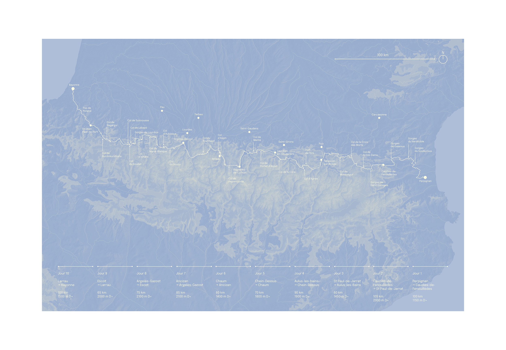
Conception graphique de l'édition "Les Traversées", journal de route d'itinérances à vélo à travers des territoires de montagnes. Première édition, les Pyrénnées, 2025
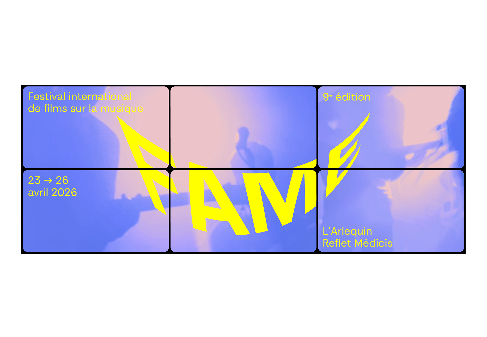
Identité graphique de la 9eme édition du festival international de films sur la musique FAME — nov. 2025

Identité graphique de l'Espace Culturel de l'Université Toulouse Capitole — juin 2025

Identité graphique du festival We Act, mai — 2025
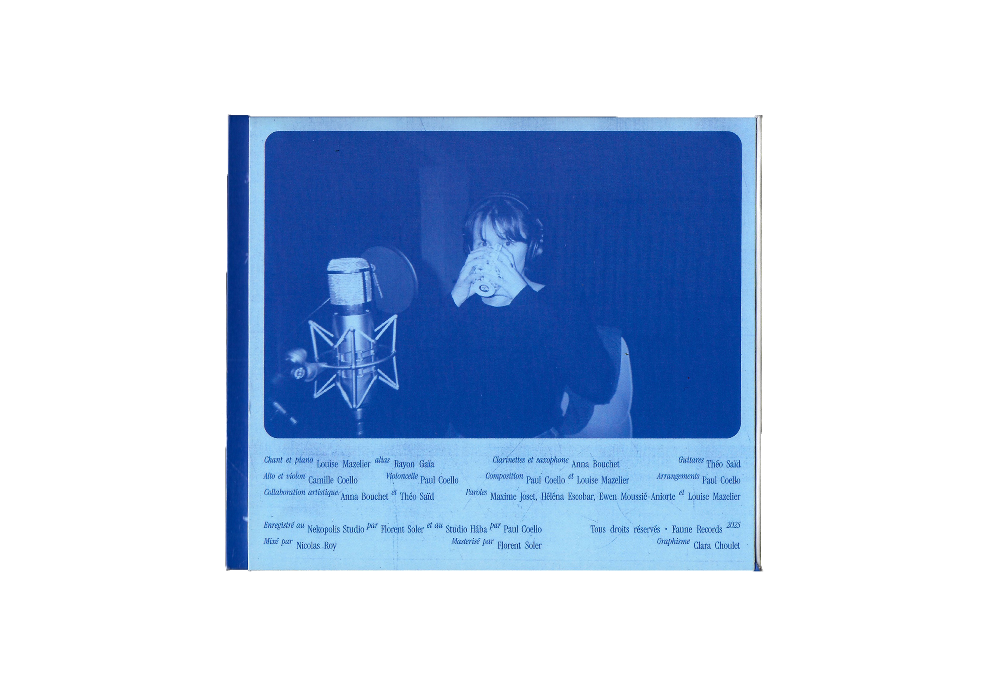
Pochette d'album et songbook pour Rayon Gaïa, août 2025
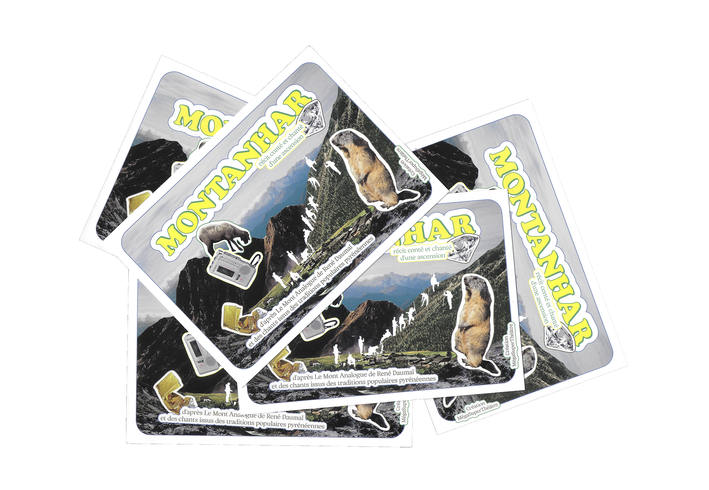
Conception graphique de l'affiche et de de l'invtation pour le spectacle Montanhar, de la Cie MégaSuperThéatre — juin 2025

Animation d'un workshop sur les utopies sociales et urbaines — février à juin 2025

Conception graphique du dépliant de médiation des œuvres du 1% artistique du bâtiment Rempart, Université Toulouse Capitole — fév. 2025
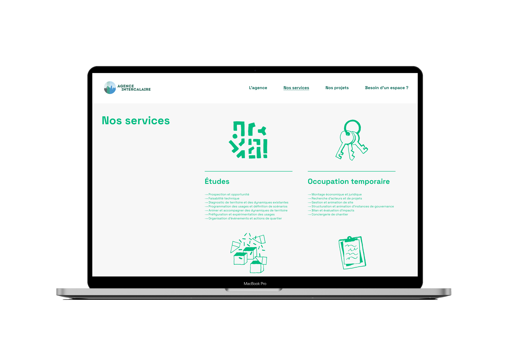
Identité graphique et site web de l'Agence Intercalaire à Toulouse — avril 2025

Nous aimions la terre, mais n'avons pû rester, recherches graphiques — avril 2025
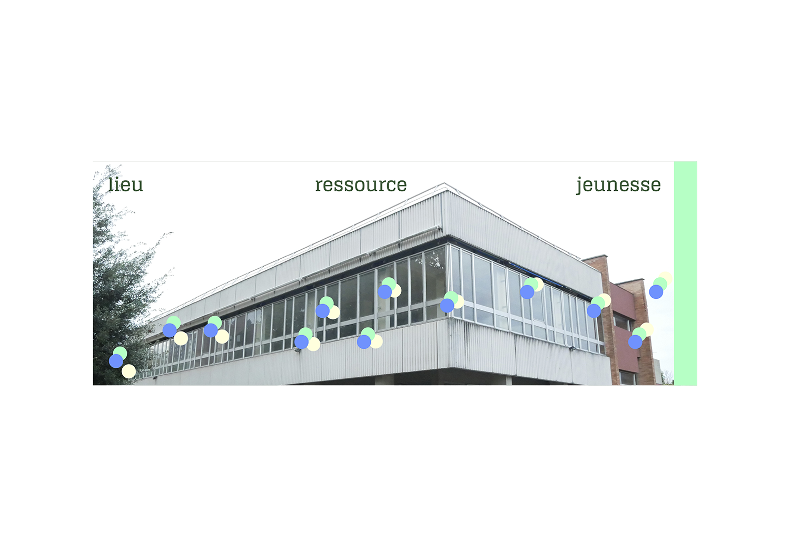
Identité graphique du tiers-lieu la Jonction — nov. 2024

Identité graphique de l'Atelier Rhizome — nov. 2024

Accompagnement et traduction graphique pour la démarche de requalification de l'îlot Denis Papin, dans le centre historique de Blois, avec le collectif tout terrain — juin 2024 à octobre 2025
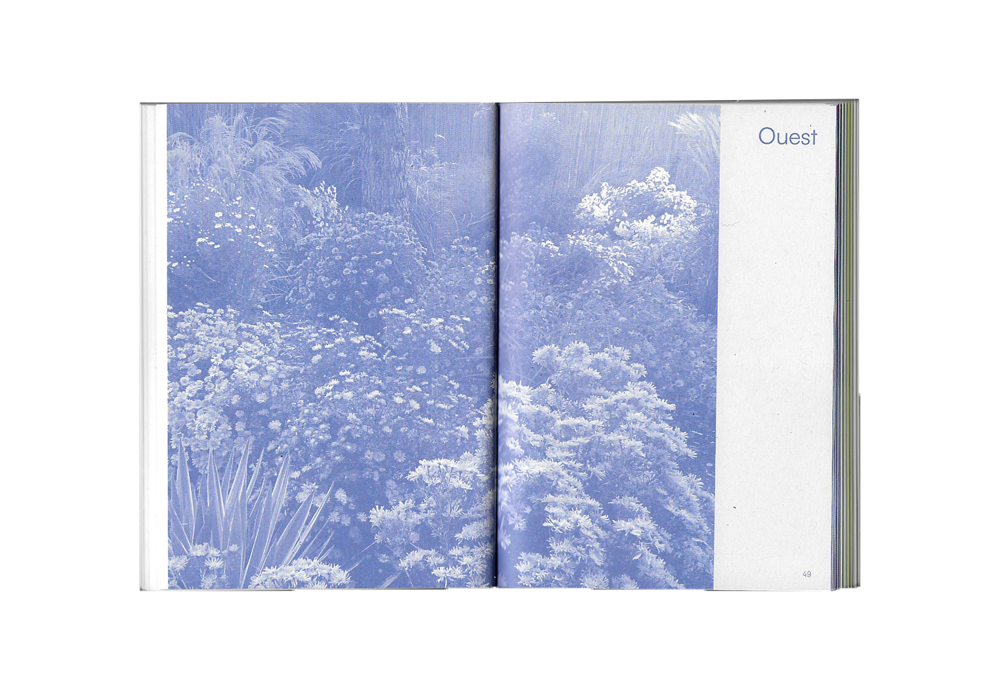
Mise en page du livret annuel Couleur Jardin, édité par le CAUE 77 — mai 2024
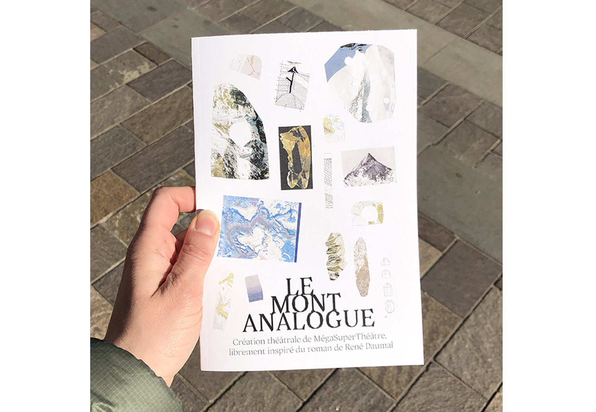
Mise en page du livret de présentation de la nouvelle création de la Cie MégaSuperThéâtre : le Mont Analogue — avril 2024
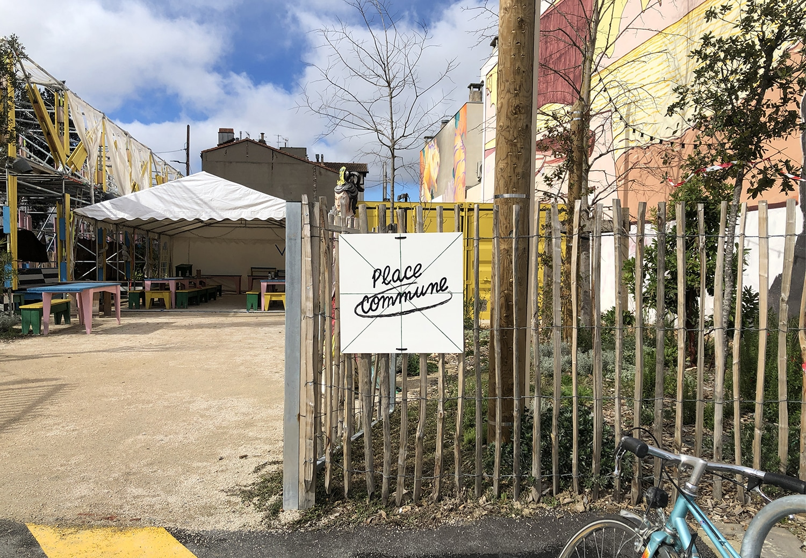
Signalétique du tiers-lieu Place Commune — fév. 2024

Mise en page du recueil de poèmes "Toutes ces petites éternités", de Suzanne Rivère — déc. 2023

Mise en page du livret : Plaidoyer pour une loi "Arbres hors forêt", édité par le CAUE 77 — sept. 2023

Conception du catalogue de formations du BBB centre d'art — août 2023

Mise en page de la revue Redirection Écologique, écrit par le MSc Strategy & design for the Anthropocène de l'ESC Clermont Business School & Strate, École de Design à Lyon — juillet 2023

Conception de l'affiche pour le spectacle : la Séance, de la compagnie MegaSuperThéâtre — août 2023

Captation live du single Petrichor pour le duo de trip-hop Moon Thrills, produit par Nuance Records — juin 2023

Identité graphique et site web du tiers-lieu Place Commune — août 2023
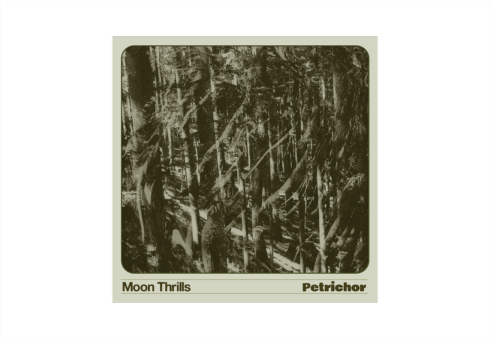
Artwork du single 'Petrichor' du duo de trip-hop londonien Moon Thrills — mai 2023

Identité graphique du collectif de paysagistes Chifoumi, site web et mise en page du portfolio — jan. 2022

Identité graphique Pauline Cabrol — guide conférencière — sept. 2022

Supports de communication pour l'artiste Robine Arnaud — nov. 2022

Conception de l'affiche du festival Sign'ô — mai 2022

Identité graphique de la marque Floatee — tee-shirt anti-noyade pour enfant — jan. 2022

Identité graphique du tiers-lieu Edenn — Espace de coopération et d'expérimentation à la nature urbaine qui réunit une dizaine de structures autour de l'alimentation et de l'agriculture urbaine — jan. 2022

Mise en page du second recueil de poèmes de Suzanne Rivère "Où s'en vont les songes à la saison morte ?" — déc. 2021

Réalisation du clip vidéo du single Moi Tout Seul pour l'artiste Gatien — fév. 2021

Identité graphique et logotype du tiers-lieu culturel Le Sample, à Bagnolet — juin 2021
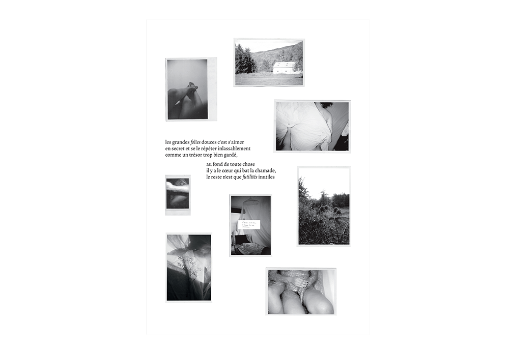
Mise en page du premier recueil de poésie de Suzanne Rivère "Journal de Deuil" — déc. 2020

Réalisation du clip vidéo du single Variations Obscures de l'artiste Plaie — nov. 2020

Identité graphique et signalétique du Clos Jacquin — juillet 2020
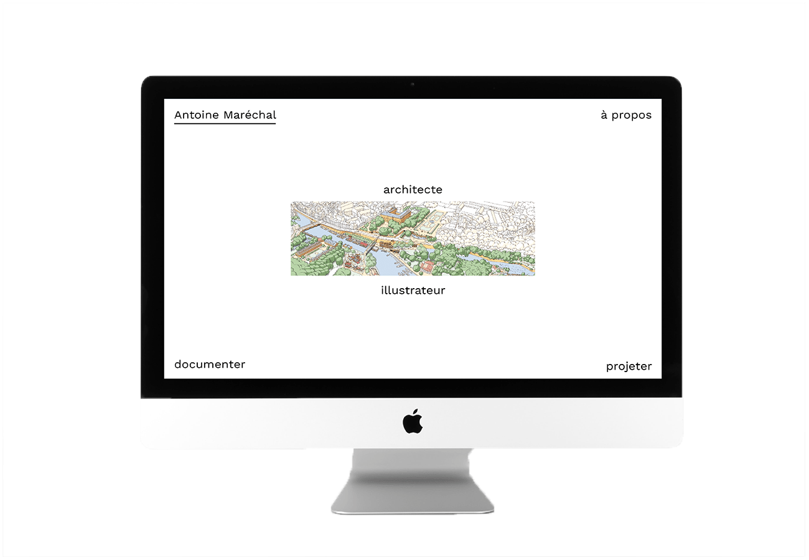
Conception du site web de l'illustrateur Antoine Maréchal — juillet 2020
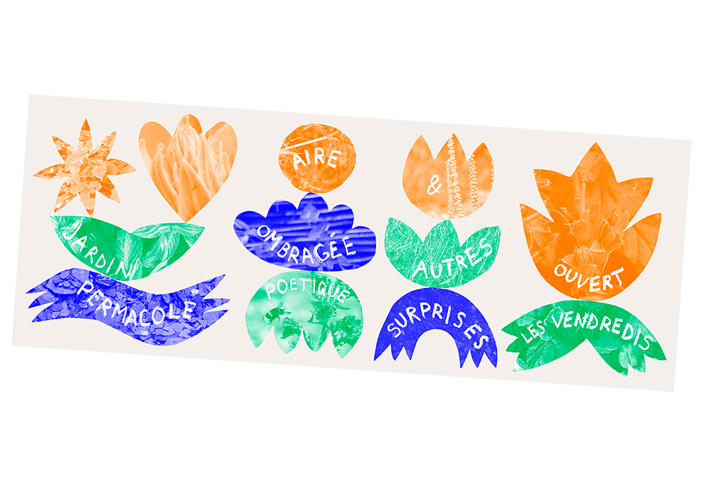
Supports de communication et signalétique pour le jardin poétique et permacole Jard'In Zur, à St Barthélemy d'Anjou — mai 2020

Identité graphique de l'Observatoire des Formations Citoyennes — fév. 2020

Identité graphique et mide en page du catalogue de l'Échapée des Copropriétés, association ayant pour but d'impulser une dynamique collective au sein d'habitats privés. — janv. 2020

Identité graphique du label Nuance Records — déc. 2019

Scénographie de la biennale la Ville en Jeux — nov. 2019

Mise en page de livre Cinema Makers, écrit par Agnès Salson et Mikaël Arnal, aux éditions Le Blog Documentaire, 2019

Identité graphique du Connexion Live à Toulouse, 2019-2020

Identité graphique et signalétique du tiers-lieu la Villa en Chantier, 2019

Identité graphique du groupe de post-punk Coudasse, et clip vidéo du leur premier single "Sick Dog", 2018

Identité graphique de la coopérative l'Université, 2018

Outil de visualisation des différents pôles et de l'implication bénévole du cinéma indépendant la Forêt Electrique, 2018

Identité graphique, site web et signalétique du tiers-lieu la Ferme de la Mhotte, 2017